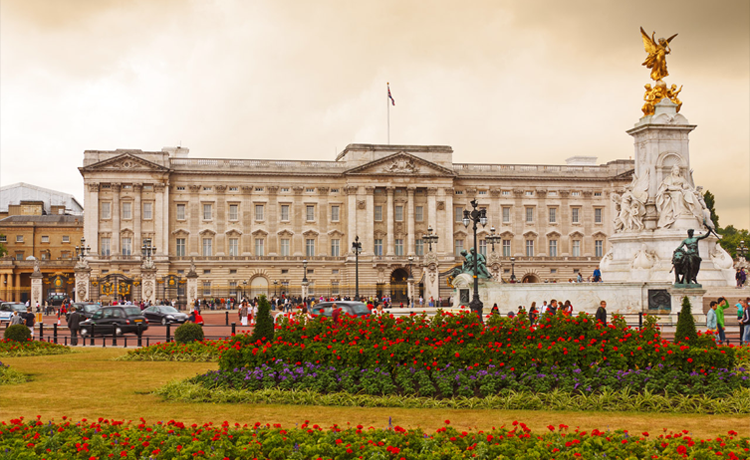
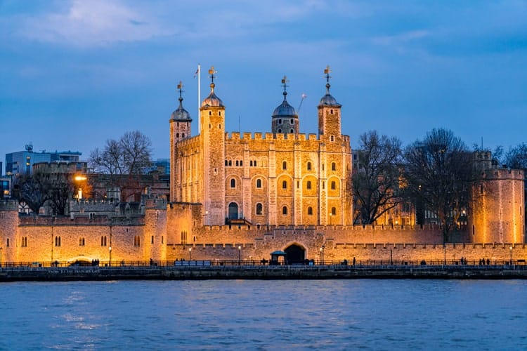

PONTOS TURISTICOS
Palácio de Buckingham
O Palácio de Buckingham é a residência oficial e principal local de trabalho do Monarca do Reino Unido em Londres.
Torre de Londres
A torre de londres é um castelo histórico localizado na cidade de Londres, Inglaterra, Reino Unido, na margem norte do rio Tâmisa. Foi fundado por volta do final do ano de 1066 depois da conquista normanda da Inglaterra.